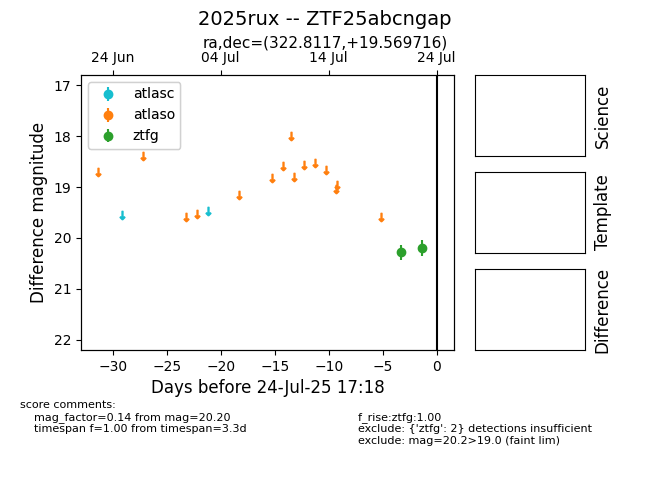

Target 2025rux at 2025-07-24 17:18, see:
FINK: fink-portal.org/2025rux
Lasair: lasair-ztf.lsst.ac.uk/objects/2025rux
ALeRCE: alerce.online/object/2025rux
TNS: wis-tns.org/object/2025rux
YSE: ziggy.ucolick.org/yse/transient_detail/2025rux
alt names
ZTF25abcngap (ztf,fink)
2025rux (tns,yse)
coordinates:
equatorial (ra, dec) = (322.8117,+19.56972)
galactic (l, b) = (71.4056,-22.69080)
photometry
last ztfg=20.20
2 ztfg detections
